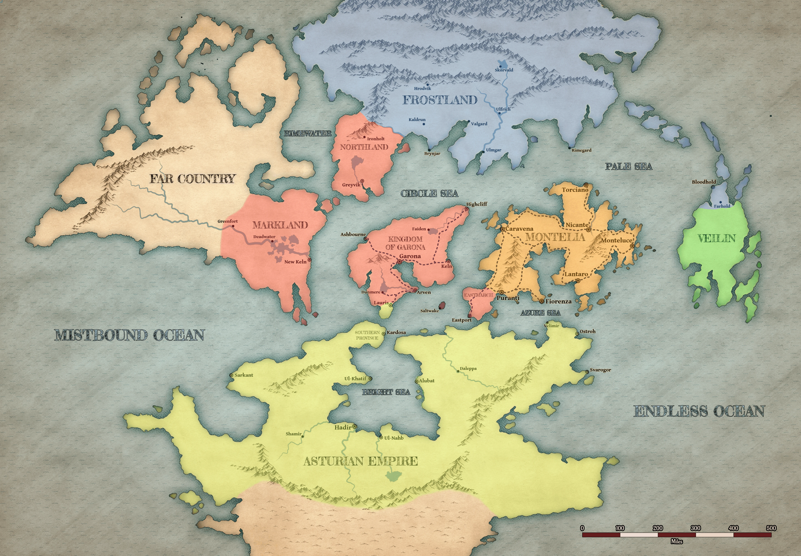

746 рік від заснування
Від 2 до 9 Tarsakh 746 року.
Що герої взяли на себе — і що вже закрили.
Ще в , у таємній кімнаті , герої знайшли лист від її батька — . З нього видно, що чекав війни задовго до того, як вона почалася, і що дім готує щось, приурочене саме до приїзду короля в столицю: «основний етап», до якого треба встигнути завершити підготовку.
У листі є й адреса — вулиця святого Іштана, будинок 7, ринковий район. Туди відправляв на зустріч із людьми .
Герої дісталися . Лист при них, і намір у них простий: дійти до й попередити його, поки «основний етап» не почався.
На вулиці святого Іштана, 7 герої дізналися, що пʼять днів тому в будинку вбили сімʼю купця Мартіна, а семеро людей, які зайшли туди перед убивством, так і не вийшли. Усередині їх зустріла із , що розслідує цю справу. Герої обережно натякнули їй на лист і можливий замах на короля, а вона розповіла про таке саме вбивство в палаці: три служниці у винному погребі, складені в одну купу у великій калюжі крові.
Темна кімната в підвалі будинку перенесла героїв на інший план — у занедбану, моторошну копію міста. Звідти видно промені світла над будинком, над палацом і ще один, значно більший, далеко на північному заході. Ламія пройти не змогла. Герої рушили до палацу.
На честь приїзду в оголосили турнір. Герої збираються взяти в ньому участь.
На арені пояснив правила: команда з трьох бійців під власною назвою, магія повністю заборонена, переможців посвячують у лицарі й запрошують на банкет до короля. Але записатися герої не змогли: команді потрібен поручитель — шляхтич із титулом, офіцер міської варти чи армії не нижче капітана або уповноважений королівської канцелярії, — який відповідає за неї репутацією та грошима.
Капітан має право поручитися, але просто так ризикувати не хоче: просить щонайменше пʼятсот золотих завдатку й окрему плату, суму якої ще не назвав. Грошової нагороди турнір не дає, зате на нього ставлять — і ближче до початку Пелагій за плату обіцяв звести героїв із тими, хто приймає ставки.
Неподалік , головного міста , у є містечко, де йому мали віддати його частку — золото й артефакти, сховані ще з піратської молодості. Справа чекає на той день, коли піде повз Істмарш.
домовилася з героями про постачання суконь, перешитих із гардеробу . Дві вже продані.
У лишилося розпродати привезене: ящик — у філію , про це вже домовлено за тридцять золотих; останню пляшку вина з маєтку ; коралову статуетку та срібний сервіз.
Шість пейзажів Морелли вже продані: , власник крамниці «», узяв усі шість по двадцять золотих. Крім того, домовилися: якщо герої прорекламують «Полотно» на , картини підуть по сорок — Пєр доплатить ще сто двадцять.
Тисячу золотих обіцяли за чоловіка з розшукової листівки — але платили тільки за тіло, привезене до столиці. Тіло здали офіцеру , триста золотих віддали за домовленістю. Імʼя вбитого — — герої дізналися аж там.
просив віднести лист отцю в в столиці — з неушкодженою печаткою. Герої свідомо не стали читати й донесли лист цілим. Домінік прочитав його, спалив і не сказав ні слова про зміст. Тільки те, що вони дуже ризикували.
У просто так не пускають. дала героям вантаж із документами на заїзд — для королівської фуа-гра, яких гравці назвали Олею, Любою і Недісом. Гусок здали на птахоферму , документи спрацювали.
Двісті пʼятдесят пляшок вина, куплених в по золотому, продані в за триста сімдесят пʼять. Сто двадцять пʼять золотих прибутку.
доручив героям принести три картини жінки з темним волоссям і світлими очима з біля парку в Нижньому Місті . чекала в спальні серед полотен; героїв затягнуло всередину картин, і там вони билися з її породженнями. Картини Пекар отримав — і розрахувався щедро: документами на та особняком у власність.
«» герої викрали, а не купили, і паперів на нього не було. Клерк у підказав, що питання вирішується не там, а в : треба знайти й сказати йому «до пекаря». Тягнулося це довго й закрилося аж після : за три картини посприяв, і документи нарешті опинилися в героїв на руках.
Корабель у героїв був, а капітана — ні. Дворф , що лишився при корветі, порадив на прізвисько «Мертва Голова» — колишнього пірата із і свого давнього друга. Коли герої прибули по нього, він уже сидів під вартою: прийшов у відділення сам і зізнався у вбивстві власного сина. Герої розплутали цю справу, витягли його з вʼязниці — і він став капітаном «». А почалося все з бійки у «»: , син глави , почав залицятися до офіціантки , а син Малісера цього не стерпів — і вибив йому око.
Наступного ранку після пограбування обмінного дому з маяка стало видно те, чого ніхто не чекав: на сунула армія . Усі кораблі реквізувала корона, у порту стояв мовчазний натовп із вузлами, а єдине судно на Срібних Доках — — щойно перейшло до . Герої вивели його просто в неї з-під носа: тихо не вийшло, у бою несподівано допоміг колишній солдат . З міста, яке вже палало, вони вивезли близько півтори сотні людей.
Відлік — від дня, коли почалася ваша історія.
Те, що відбувалося поруч, поки ви були зайняті іншим.
